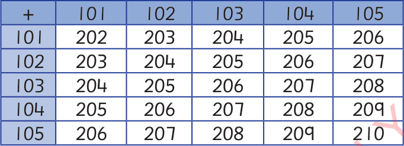

Angalia mstari wa kwanza wa ulalo. Mstari huo una namba 101, 102, 103, 104 na 105. Angalia mstari wa kwanza wa wima. Mstari huo una namba 101, 102, 103, 104 na 105.
Chunguza namba kwenye makutano ya safu ya ulalo na wima. Kila namba kwenye kisanduku ni jumla ya namba mbili. Namba hizo zipo kwenye safu ya ulalo na wima.